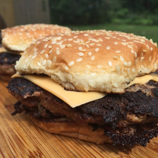

Smashburger

Description:
After stripping down my cast iron skillet there was only
one thought on my mind... Smashing my meat. With the smashburger
you get a greasy, delicous, lip smacking burger in minutes. I recommend
getting yourself a nice cast iron for this one.
Ingredients:
- Burger Buns
- Ground Chuck
- Vegetable Oil
- American sliced cheese
- Salt
- Pepper
- Mustard
- Mayo
- Sliced pickles
Directions
- Preheat your castiron on medium until hot
- Toast Buns on cast iron
- Spread a mixture of mayo and mustard on each bun
- Make two small balls of ground chuck
- Drop each ball onto the cast iron with plenty of space between the two
- Cover each ball with foil and smash very thing with a burger smasher or a pot
- Salt and pepper the now smashed burgers
- Cook each burger for 2 minutes, the flip for another 1 minute
- While still hot, put the patties on your bun to form a delicious sauce with the mayo mixture
- Add any additional condiments, pickles, and enojoy